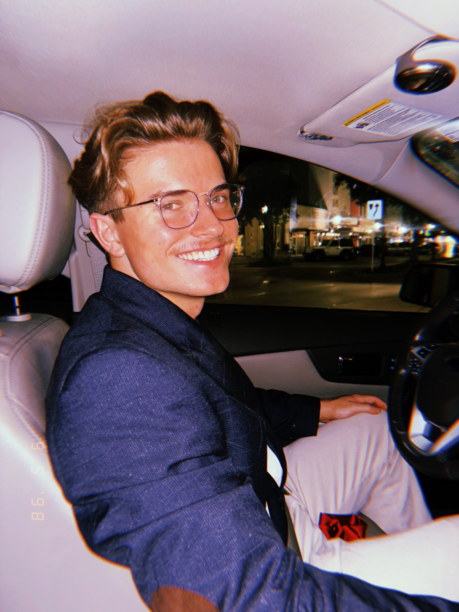
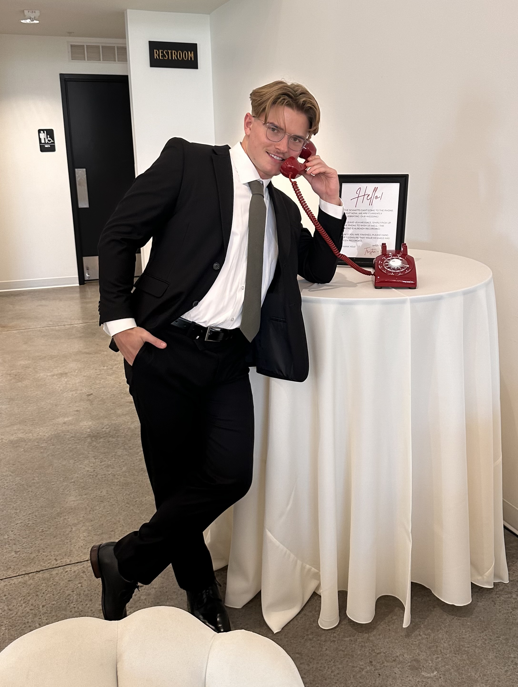

Email: stenschmidtswe@tamu.edu
Hi, I'm Sten and I'm a hard-working computer science
undergrad at Texas A&M University. I've done plenty of
software engineering in back-end fields, such as building
endpoints for various different APIs and adding attributes
to the models for APIs. I've completed 4 separate internships
(see my resume on the "Qualifications" page) so far and am
hungry for more. I'm a fifth year, currently set to graduate
in May of 2027. I need the extra year to get a minor
in bioinformatics, since computational biology also
interests me.
I am introverted but more socially warm than most engineers,
thanks to my activity in the frat Phi Kappa Psi.
In terms of teamwork I consider myself heavily determined
to get the job done right and well the first time, but
I'm also open-minded when it comes to brain-storming
in the planning phase.
